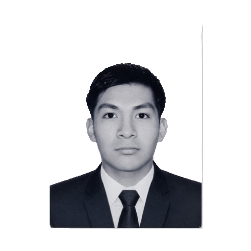
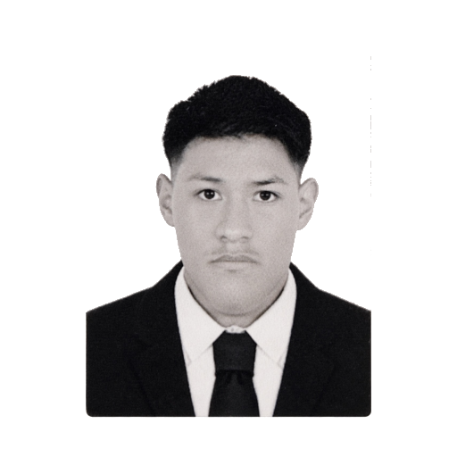
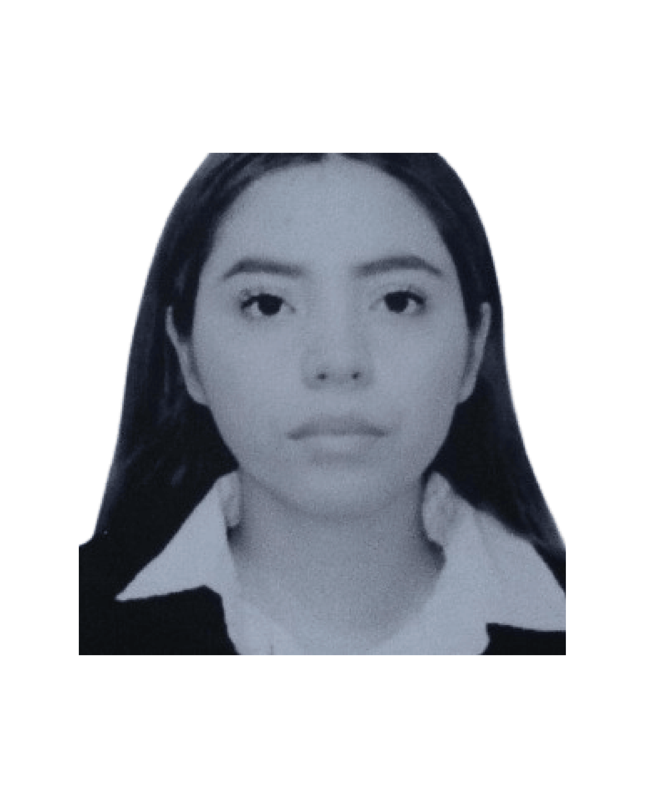
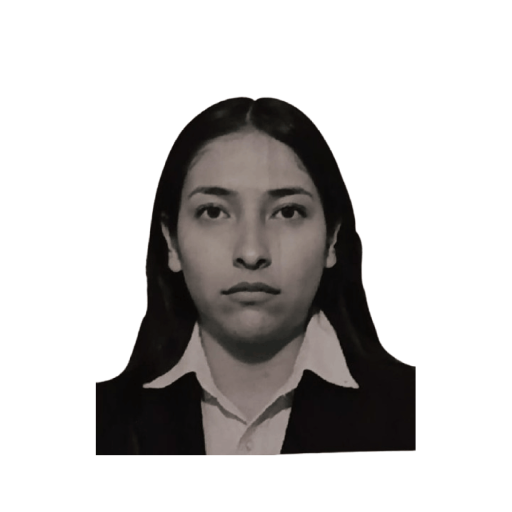

Equipo de desarrollo de la Universidad Tecnológica de Nezahualcóyotl especializado en software, diseño de interfaces, bases de datos y soluciones digitales.
Brian Yahir Escalante GonzálezLíder del equipo y desarrollador Backend
Ángel Martín Santiago SeguraEspecialista en interfaces web y experiencia de usuario

Daniel Hernández CruzProgramador full stack con experiencia en desarrollo de aplicaciones

Millán Pérez Cristofer AntonioResponsable de pruebas de calidad y validación de sistemas

Mora Pluma Naydelin GuadalupeDiseñadora UI/UX enfocada en accesibilidad y diseño visual

Nuci Vázquez AndreaAnalista de requerimientos y documentación de proyectos
Participación en proyectos académicosY desarrollo de soluciones tecnológicas reales
Especialistas en desarrollo webBases de datos y diseño UI
Comprometidos con la innovaciónY la mejora continua